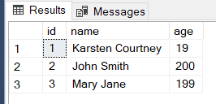

Tutorial
Create a connection
In order to create a basic connection to a SQL Server all you have to do is import and create a default object
This creates a Connection to a SQL server that is hosted on the same computer and attempts to find a database called master. It defaults to version 17 of the ODBC Driver.Create a connection from a config file
This library supports loading from a toml config file. For example if we had a local file called config.toml with the contents of
[sql_server]
server = "TestServer"
database = "master"
version = 17
[sql_commands]
INSERT_DAILY = "SELECT * FROM logs;"
[sql_server] and its following variables establish the server and database to connect to and which version of the ODBC driver to use
The header [sql_commands] allows you to establish commands
We write the following code to load a Database Connection from the toml file
Adding a command
Once you have established a connection with the database and want to add commands you can call the function
SELECT_ALL which when called by the call method it will then execute the SQL command
Executing a command
Once you have established a connection with the database and have your commands defined you can begin executing the commands
For example lets say we have a config file called commands.toml defined like this:
[sql_server]
server = "TestBed1"
database = "PythonTest"
version = 17
[sql_commands]
SELECT_ALL_PEOPLE = "SELECT * FROM [dbo].[People]"
SELECT_PERSON_BY_ID = "SELECT * FROM [dbo].[People] WHERE [id] = ?"
UPDATE_AGE_BY_ID = "UPDATE [dbo].[People] set [name] = ?, [age] = ? WHERE [id] = ?"
TestBed1 in a database called PythonTest we have a table defined with some data like this on a table called People:

The ? used in the sql commands is a placeholder for a argument that must be passed in
Finally we can call an sql command with the following code
SELECT_ALL_PEOPLE since the command does not have any ? in its definition we don't need to pass any arguments
But if we call the command:
?
If there are more than one arguments you can do the following
"Jessica" in to the first ?, 9 into the second ?, and 1 into the third ?
Executing a command many times over
If you want to execute the same command multiple times but with different values you can do
UPDATE_AGE_BY_ID three times since there are three sets of values
Retrieving values after a SELECT query
If you run a command that retrieves data from the database you can do
This returns a single pyodbc RowIf you want to select multiple rows to return you can pass a number into fetch to fetch that many rows
If you want to get all rows that were queried you can simply do
This will return all queried informationCommitting and/pr rollback changes
If you run a command that INSERTS, UPDATES, or DELETES data you must either commit those changes to the database by calling
or if you want to undo those changes or if theres an error you can rollback by calling
Grabbing ahold of the Cursor
If you want to access the cursor to the database to read any additional information just do